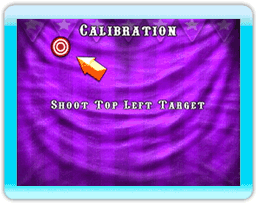

El juego viene precalibrado a un nivel predeterminado que optimiza la interacción con el Wii Remote. Sin embargo, cuando la calibración no sea la adecuada, puedes recalibrar el juego. Es muy importante estar de 2.5 a 3 m de la pantalla durante la calibración del Wii Remote.
- Apunta con el Wii Remote al blanco que aparece en la esquina superior izquierda y dispara.
- Apunta con el Wii Remote al blanco que aparece en la esquina inferior derecha y dispara.
- Si estás satisfecho con la respuesta del cursor en la pantalla a los movimientos del Wii Remote, dispara a Aceptar. Si no es así, dispara a Tratar nuevamente. Presiona para restablecer el valor predeterminado.
Nota:
 Durante la calibración, no aparece el cursor en la pantalla. Si apuntas muy afuera de la zona de calibración, el Wii Remote vibrará y en la pantalla aparecerá el mensaje ‘Apuntas fuera de límites’ con una flecha junto al blanco que indica la última posición a la que apuntaste.
Durante la calibración, no aparece el cursor en la pantalla. Si apuntas muy afuera de la zona de calibración, el Wii Remote vibrará y en la pantalla aparecerá el mensaje ‘Apuntas fuera de límites’ con una flecha junto al blanco que indica la última posición a la que apuntaste.
Si eso llegara a suceder, sostén fijo el Wii Remote, apunta a la ubicación del blanco y mantenlo así hasta que aparezca el blanco. Recuerda que la manera cómo sostengas el Wii Remote durante la calibración afectará los resultados finales. Sostén el Wii Remote en una posición de tiro que sientas natural y que utilizarás durante el juego.